JDBC通用 解释器
原文链接 : http://zeppelin.apache.org/docs/0.7.2/interpreter/jdbc.html
译文链接 : http://www.apache.wiki/pages/viewpage.action?pageId=10030838
概述
JDBC解释器允许您无缝地创建到任何数据源的JDBC连接。
在运行每个语句后，将立即应用插入，更新和升级。
到目前为止，已经通过以下测试：
| |
- Postgresql - JDBC驱动
- Mysql - JDBC驱动
- MariaDB - JDBC驱动程序
- Redshift - JDBC驱动
- Apache Hive - JDBC驱动
- Apache Phoenix 本身是一个JDBC驱动
- Apache Drill - JDBC驱动
- Apache Tajo - JDBC驱动
| | --- | --- |
如果您使用的其他数据库不在上述列表中，请随时分享您的用例。这将有助于提高JDBC解释器的功能。
创建一个新的JDBC解释器
首先，+ Create在解释器设置页面的右上角单击按钮。
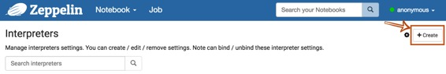
Interpreter name用任何你想要用作别名的填充字段（如mysql，mysql2，hive，redshift等）。请注意，此别名将用于%interpreter_name在段落中调用解释器。然后选择jdbc为Interpreter group。
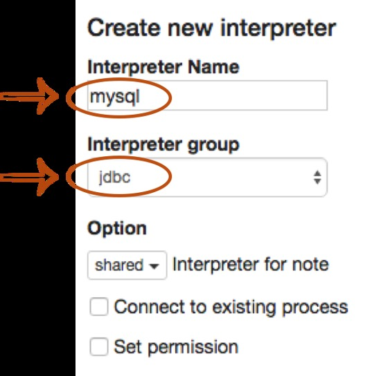
JDBC解释器的默认驱动程序设置为PostgreSQL。这意味着Zeppelin PostgreSQL本身就包括驱动程序jar。因此，您不需要为连接添加任何依赖项（例如PostgreSQL驱动程序jar 的工件名称或路径）PostgreSQL。JDBC解释器属性默认定义如下。
| 名称 | 默认值 | 描述 |
|---|---|---|
| common.max_count | 1000 | 要显示的SQL结果的最大数量 |
| default.driver | org.postgresql.Driver | JDBC驱动程序名称 |
| default.password | JDBC用户密码 | |
| default.url | jdbc:postgresql://localhost:5432/ | JDBC的URL |
| default.user | gpadmin | JDBC用户名 |
如果你想连接其他数据库如Mysql，Redshift和Hive，你需要编辑的属性值。您还可以使用Credential进行JDBC身份验证。在解释器设置页面中，如果default.user和default.password属性被删除（使用X按钮）进行数据库连接，则JDBC解释器将从Credential获取帐户信息。
下面的例子是Mysql连接。
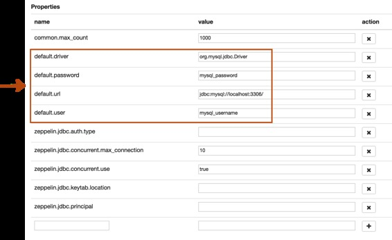
最后一步是依赖关系设置。由于Zeppelin PostgreSQL默认仅包含驱动程序jar，因此您需要为其他数据库添加每个驱动程序的maven坐标或JDBC驱动程序的jar文件路径。
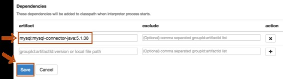
而已。您可以在本节中找到更多JDBC连接设置示例（Mysql，MariaDB，Redshift，Apache Hive，Apache Phoenix和Apache Tajo）。
更多属性
您可以在下面指定更多的JDBC解释器属性。
| 物业名称 | 描述 |
|---|---|
| common.max_result | 要显示的SQL结果的最大数量，以防止浏览器超载。这是所有连接的常见属性 |
| zeppelin.jdbc.auth.type | 支持的认证方式类型有SIMPLE，和KERBEROS |
| zeppelin.jdbc.principal | 从keytab加载的主要名称 |
| zeppelin.jdbc.keytab.location | keytab文件的路径 |
| default.jceks.file | jceks存储路径（例如：jceks://file/tmp/zeppelin.jceks） |
| default.jceks.credentialKey | jceks凭证钥匙 |
您还可以使用此方法添加更多属性。例如，如果一个连接需要一个schema参数，那么它必须添加如下的属性：
| 名称 | 值 |
|---|---|
| default.schema | SCHEMA_NAME |
将JDBC插件绑定到笔记本
要绑定解释器设置页面中创建的口译员，请单击右上角的齿轮图标。
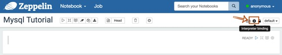
根据用例选择（蓝色）或取消选择（白色）解释器按钮。如果您需要在笔记本中使用多个解释器，请激活几个按钮。不要忘记点击Save按钮，否则您将面临Interpreter *** is not found错误。
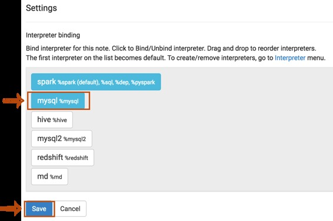
如何使用
使用JDBC解释器运行段落
要测试您的数据库和Zeppelin是否成功连接，请在段落的顶部输入%jdbc_interpreter_name（例如%mysql）并运行show databases。
%jdbc_interpreter_name
show databases
如果段落FINISHED没有任何错误，则会在上一个之后自动添加一个新的段落%jdbc_interpreter_name。所以你不需要在每个段落的标题中键入这个前缀。
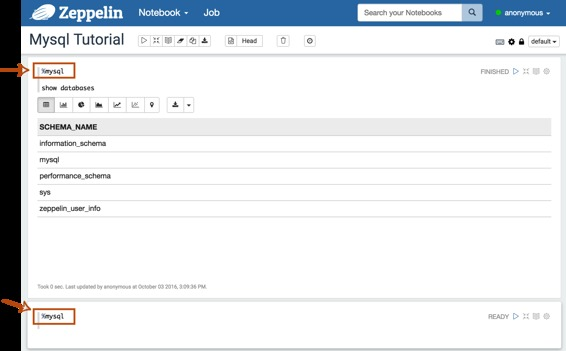
应用Zeppelin动态表单
您可以在查询内使用Zeppelin 动态表单。您可以使用参数化功能text input和select form参数化功能。
%jdbc_interpreter_name
SELECT name, country, performer
FROM demo.performers
WHERE name='{{performer=Sheryl Crow|Doof|Fanfarlo|Los Paranoia}}'
例子
以下是您可以参考的一些例子。包括以下连接器，您可以连接每个数据库，只要它可以配置它的JDBC驱动程序。
Postgres
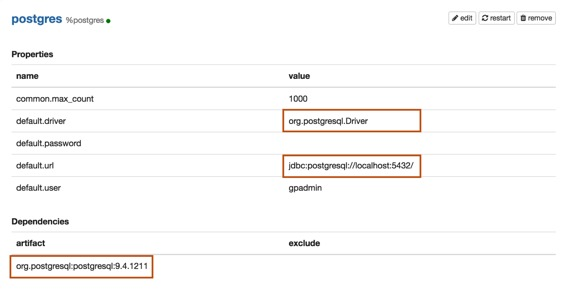
| 名称 | 值 |
|---|---|
| default.driver | org.postgresql.Driver |
| default.url | jdbc:postgresql://localhost:5432/ |
| default.user | mysql_user |
| default.password | mysql_password |
依赖
| Artifact | Excludes |
|---|---|
| org.postgresql:postgresql:9.4.1211 |
Maven Repository: org.postgresql:postgresql
Mysql
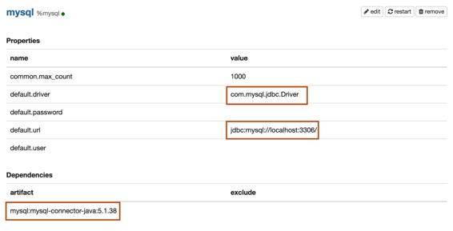
| 名称 | 值 |
|---|---|
| default.driver | com.mysql.jdbc.Driver |
| default.url | jdbc:mysql://localhost:3306/ |
| default.user | mysql_user |
| default.password | mysql_password |
| Artifact | Excludes |
|---|---|
| mysql:mysql-connector-java:5.1.38 |
Maven Repository: mysql:mysql-connector-java
MariaDB
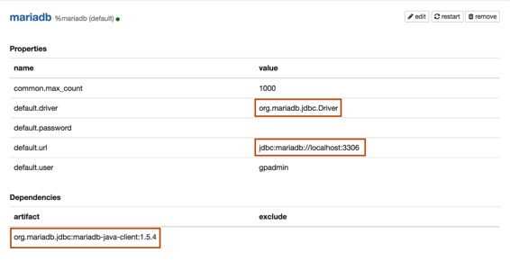
属性
| 名称 | 值 |
|---|---|
| default.driver | org.mariadb.jdbc.Driver |
| default.url | jdbc:mariadb://localhost:3306 |
| default.user | mariadb_user |
| default.password | mariadb_password |
| Artifact | Excludes |
|---|---|
| org.mariadb.jdbc:mariadb-java-client:1.5.4 |
Maven Repository: org.mariadb.jdbc:mariadb-java-client
Redshift
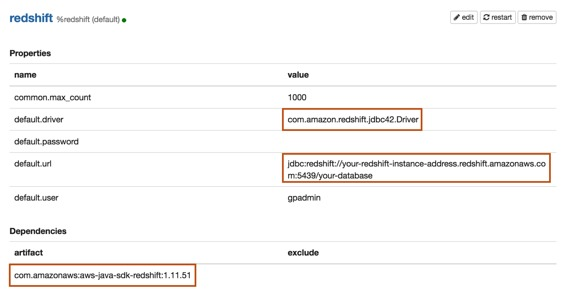
属性
| 名称 | 值 |
|---|---|
| default.driver | com.amazon.redshift.jdbc42.Driver |
| default.url | jdbc:redshift://your-redshift-instance-address.redshift.amazonaws.com:5439/your-database |
| default.user | redshift_user |
| default.password | redshift_password |
依赖
| Artifact | Excludes |
|---|---|
| com.amazonaws:aws-java-sdk-redshift:1.11.51 |
Maven Repository: com.amazonaws:aws-java-sdk-redshift
Apache Hive
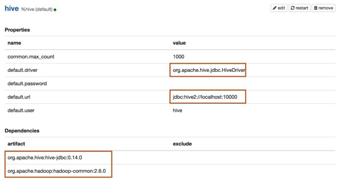
| 名称 | 值 |
|---|---|
| default.driver | org.apache.hive.jdbc.HiveDriver |
| default.url | jdbc:hive2://localhost:10000 |
| default.user | hive_user |
| default.password | hive_password |
Apache Hive 1 JDBC驱动程序文档 Apache Hive 2 JDBC驱动程序文档
依赖
| Artifact | Excludes |
|---|---|
| org.apache.hive:hive-jdbc:0.14.0 | |
| org.apache.hadoop:hadoop-common:2.6.0 |
Maven Repository : org.apache.hive:hive-jdbc
Apache Phoenix
Phoenix支持thick和thin连接类型：
- Thick client更快，但必须直接连接到ZooKeeper和HBase RegionServers。
- Thin client具有较少的依赖关系，并通过Phoenix Query Server实例进行连接。
对您的连接类型使用适当的default.driver，default.url和依赖性工件。
Thick client连接
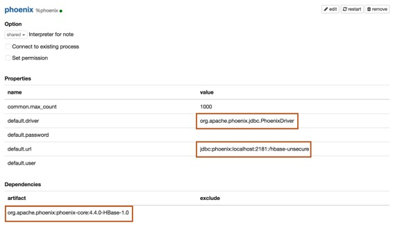
属性
| 名称 | 值 |
|---|---|
| default.driver | org.apache.phoenix.jdbc.PhoenixDriver |
| default.url | jdbc:phoenix:localhost:2181:/hbase-unsecure |
| default.user | phoenix_user |
| default.password | phoenix_password |
| Artifact | Excludes |
|---|---|
| org.apache.phoenix:phoenix-core:4.4.0-HBase-1.0 |
Maven Repository: org.apache.phoenix:phoenix-core
Thin client 连接
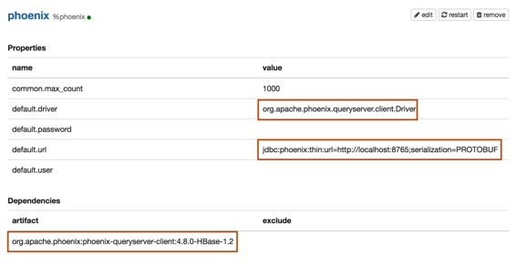
| 名称 | 值 |
|---|---|
| default.driver | org.apache.phoenix.queryserver.client.Driver |
| default.url | jdbc:phoenix:thin:url=http://localhost:8765;serialization=PROTOBUF |
| default.user | phoenix_user |
| default.password | phoenix_password |
依赖
在添加以下依赖项之一之前，首先检查Phoenix版本。
| Artifact | Excludes | Description |
|---|---|---|
| org.apache.phoenix:phoenix-server-client:4.7.0-HBase-1.1 | For Phoenix 4.7 |
|
| org.apache.phoenix:phoenix-queryserver-client:4.8.0-HBase-1.2 | For Phoenix 4.8+ |
Maven Repository: org.apache.phoenix:phoenix-queryserver-client
Apache Tajo
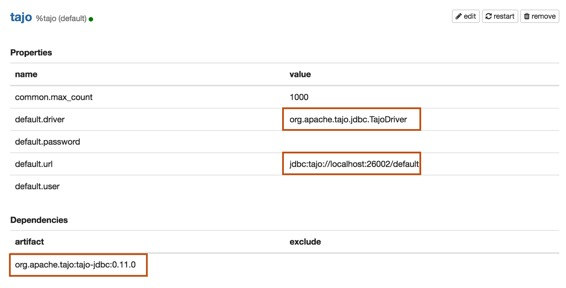
| 名称 | 值 |
|---|---|
| default.driver | org.apache.tajo.jdbc.TajoDriver |
| default.url | jdbc:tajo://localhost:26002/default |
依赖
| Artifact | Excludes |
|---|---|
| org.apache.tajo:tajo-jdbc:0.11.0 |
Maven Repository: org.apache.tajo:tajo-jdbc
错误报告
如果您使用JDBC解释器发现错误，请创建一个JIRA ticket。